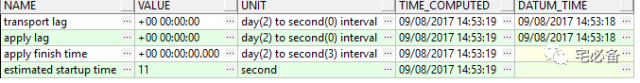

Data Guard及ADG日常运维操作
从这期开始讲Oracle Data Guard方面的内容
Data Guard作为Oracle提供的一个高可用及灾备解决方案,理解并可以实施它对于DBA来说是非常重要套的技能
前面我们已经介绍了如何假设物理备库，今天介绍日常如何运维和如何开启ADG
1. Data Guard状态查看
1.1 查看归档路径信息
select dest_name,
status,
target,
ARCHIVER,
destination,
log_sequence,
valid_type,
valid_role
from V$ARCHIVE_DEST;
这个视图可以看到归档日志的一些配置信息
1.2 查看归档路径状态
select dest_name,
type,
database_mode,
recovery_mode,
protection_mode,
destination,
SRL,
GAP_STATUS
from V$ARCHIVE_DEST_STATUS;
这个视图的信息比上个更加的具体，包括保护模式，应用模式等
1.3 查看归档日志gap状态
select * from V$ARCHIVE_GAP;
1.4 查看数据库状态
select name,log_mode,open_mode,protection_mode
from V$DATABASE;
1.5 查看备库同步状态
select*
from V$DATAGUARD_STATS;

1.6 查看ORL日志状态
select * from V$LOG;
1.7 查看ORL及SRL状态
select * from V$LOGFILE;
1.8 查看SRL状态
select* from V$STANDBY_LOG;
这里UNASSIGNED是由于负载较轻导致
相关的视图简单介绍到这，具体请参见官方文档
https://docs.oracle.com/cd/E11882_01/server.112/e41134/views.htm#SBYDB01300
2. 主库保护模式切换
请确保备库处于同步状态
2.1 最大性能到最大可用*
alter database set standby database to maximize availability;
2.2 最大可用到最大保护
alter database set standby database to maximize protection;
2.3 向后切换
alter database set standby database to maximize availability;
alter database set standby database to maximize performance;
注意：不可直接从performance切换到 protection
3. 日常操作
3.1 关闭同步
SQL>alter database recover managed standby database cancel;
3.2 开启物理备库*
SQL>startup nomount;
SQL>alter database mount standby database;
3.2.1 实时同步
SQL>ALTER DATABASE RECOVER MANAGED STANDBY DATABASE USING CURRENT LOGFILE DISCONNECT;
3.2.2 非实时同步
SQL>alter database recover managed standby database disconnect from session;
3.2.2.1 延迟4小时同步
SQL>alter database recover managed standby database delay 240 disconnect from session;
3.2.2.2 取消延迟
SQL> ALTER DATABASE RECOVER MANAGED STANDBY DATABASE NODELAY;
3.3 重新注册归档日志
有时备库的归档文件不是主库传输的而是手动拷贝过来的，需要注册才能够应用
SQL> ALTER DATABASE REGISTER LOGFILE '/oracle/NP1/oraarch/NP1arch/1_224744_671386971.dbf';
4. 开启ADG
Oracle 11g提供了ADG功能
让我们在物理备库处于Open read only状态时可以继续应用日志
4.1 关闭同步功能
如果处于同步状态需要先关闭
SQL> alter database recover managed standby database cancel;
4.2 只读方式打开备库
SQL> alter database open read only;
4.3 开启同步功能
SQL>ALTER DATABASE RECOVER MANAGED STANDBY DATABASE USING CURRENT LOGFILE DISCONNECT;
这时ADG已经开启，可以保证数据一致的情况下提供只读功能
5. 故障处理
5.1日志无法传输到备库
查询V$ARCHIVE_DEST视图看是否有错误，并查看alert日志
一般有如下情形
-
tnsnames.ora配置不正确，请用tnsping查看是否能正确解析
-
LOG_ARCHIVE_DEST_n service_name配置不正确
-
LOG_ARCHIVE_DEST_STATE_n参数未设置成enable
-
监听配置不正确，请在主库上尝试连接备库
-
备库实例未启动，至少需要处于mount状态
-
密码文件不一致，请重新拷贝主库文件至备库
5.2 备库无法mount
备库的控制文件不能是如下形式
-
操作系统备份的
-
没有用stnadby关键字备份控制文件
好了，到这里我们讲了DG日常的一些运维操作，下一节讲如何进行switchover